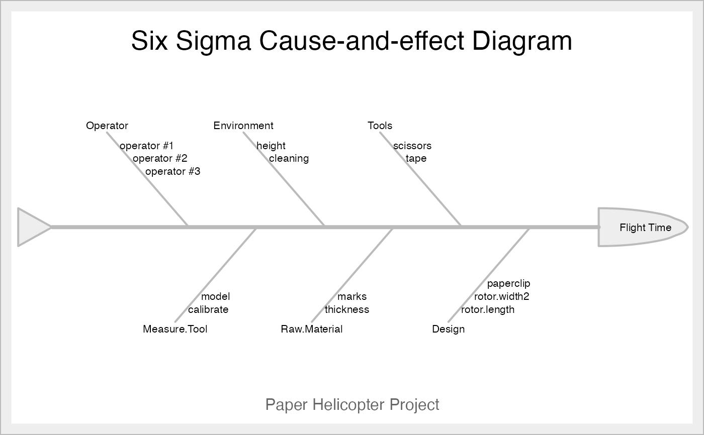

Represents a Cause and Effect Diagram by cause group.
ss.ceDiag(
effect,
causes.gr,
causes,
main = "Six Sigma Cause-and-effect Diagram",
sub,
ss.col = c("#666666", "#BBBBBB", "#CCCCCC", "#DDDDDD", "#EEEEEE")
)A short character string that represents the effect we want to analyse.
A vector of characters that represents the causes groups.
A vector with lists that represents the individual causes for each
Main title for the diagram
Subtitle for the diagram (recommended the Six Sigma project name)
A vector of colors for a personalized drawing. At least five colors, sorted by descendant intensity
A drawing of the causes and effect with "fish-bone" shape
The default value for ss.col is c("#666666", "#BBBBBB", "#CCCCCC", "#DDDDDD", "#EEEEEE"), a grayscale style. You can pass any accepted colour string.
The cause and effect diagram is also known as "Ishikawa diagram", and has been widely used in Quality Management. It is one of the Seven Basic Tools of Quality.
Cano, Emilio L., Moguerza, Javier M. and Redchuk, Andres. 2012.
Six Sigma with R. Statistical Engineering for Process
Improvement, Use R!, vol. 36. Springer, New York.
https://www.springer.com/gp/book/9781461436515.
effect <- "Flight Time"
causes.gr <- c("Operator", "Environment", "Tools", "Design",
"Raw.Material", "Measure.Tool")
causes <- vector(mode = "list", length = length(causes.gr))
causes[1] <- list(c("operator #1", "operator #2", "operator #3"))
causes[2] <- list(c("height", "cleaning"))
causes[3] <- list(c("scissors", "tape"))
causes[4] <- list(c("rotor.length", "rotor.width2", "paperclip"))
causes[5] <- list(c("thickness", "marks"))
causes[6] <- list(c("calibrate", "model"))
ss.ceDiag(effect, causes.gr, causes, sub = "Paper Helicopter Project")
